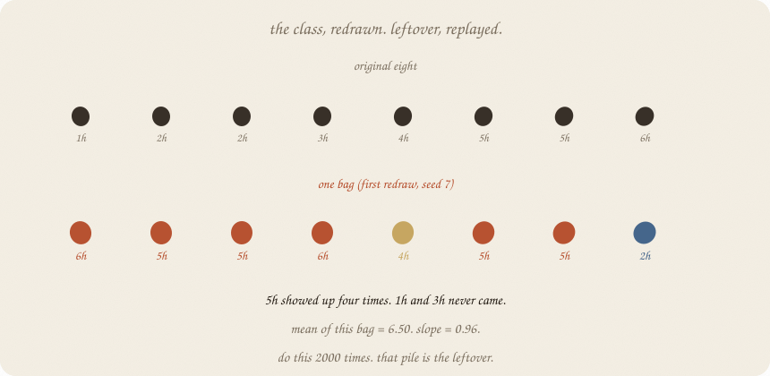
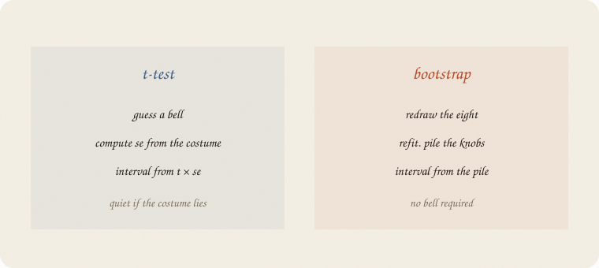
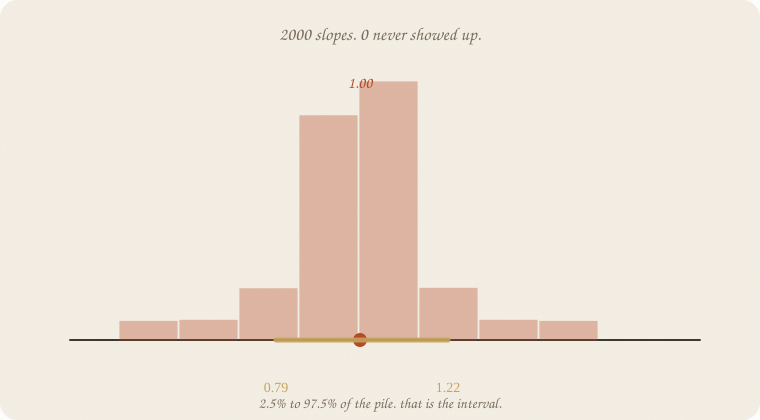
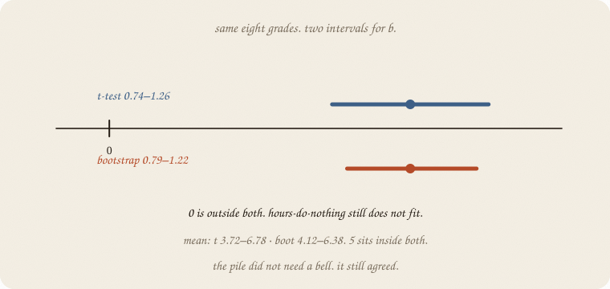
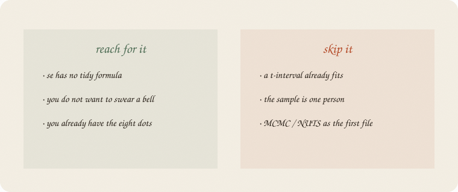

datazines · a sketchbook

Read 01 t-test first. Same eight grades. Same line ŷ = 1.75 + 1 · hours. Forests already bagged people (02 random forest). This notebook uses that redraw as a judge, not as a choir.
Flip it like a notebook. One page = one idea. Done.
01 t-test needed a bell for leftover, then se, then t × se.
That was honest when the costume fit. Eight leftovers looked like a small bell. A median, a ratio, a forest’s vote — those do not come with a tidy se.
The bootstrap’s dare:
Pretend these eight are the world. Draw eight again, some twice, some never. Refit. Repeat.

The spread of those fake worlds is leftover, replayed. Same verb as bagging. Different job: uncertainty, not a vote.
First redraw of the eight:
hours 6, 5, 5, 6, 4, 5, 5, 2
grades 8, 7, 7, 8, 6, 6, 6, 4
5h showed up four times. 1h and 3h never came. Mean of this bag = 6.50. Slope = 0.96.
The original mean was 5.25. This bag is a loud class. That is allowed. Leftover does that.
People call it sampling with replacement. Forests said bag. Same redraw.
Do it 2000 times. Each bag: a mean, a slope.

The slope pile sits on 1.00. Its sd is 0.11 — the same se the t-test printed from a formula. Zero never showed up. Hours-do-nothing is not in this world, replayed 2000 times.
The mean pile’s sd is 0.60, next to the t-test’s 0.65. Close. Eight people, two judges, same leftover.
The 2.5% and 97.5% of the pile are the interval. No t-table. No costume.

| knob | t-test 95% | bootstrap 95% | boring story inside? |
|---|---|---|---|
| mean | 3.72 – 6.78 | 4.12 – 6.38 | 5 sits in both |
| slope | 0.74 – 1.26 | 0.79 – 1.22 | 0 in neither |
Same eight grades. Bootstrap is a hair tighter here (the pile is a bit less fat-tailed than the t with 6 df). The verdict did not flip. Mean vs 5 still quiet. Slope vs 0 still loud.
When they disagree, believe the pile if you do not trust the bell. Believe neither if eight people is a joke.
If you keep only one thing:
redraw the people. the pile is leftover. percentiles are the interval.
Same table as 01 t-test. 2000 bags. LinearRegression only to refit b. The loop is the lesson.
import numpy as np
from sklearn.linear_model import LinearRegression
hours = np.array([1, 2, 2, 3, 4, 5, 5, 6], float)
grade = np.array([3, 4, 3, 5, 6, 7, 6, 8], float)
rng = np.random.default_rng(7)
n, B = 8, 2000
means = np.empty(B)
slopes = np.empty(B)
for i in range(B):
ix = rng.integers(0, n, n)
means[i] = grade[ix].mean()
slopes[i] = LinearRegression().fit(hours[ix].reshape(-1, 1), grade[ix]).coef_[0]
print("people", n, " redraws", B)
print("original mean", round(grade.mean(), 2), " slope", 1.00)
print("boot se mean", round(means.std(ddof=1), 2), " slope", round(slopes.std(ddof=1), 2))
print("95% boot mean ", np.round(np.percentile(means, [2.5, 97.5]), 2))
print("95% boot slope", np.round(np.percentile(slopes, [2.5, 97.5]), 2))
print("redraws with slope ≤ 0", int((slopes <= 0).sum()))
ix = np.random.default_rng(7).integers(0, n, n)
print("first bag hours", hours[ix].astype(int).tolist())
print("first bag grade", grade[ix].astype(int).tolist())
print("first bag mean", round(grade[ix].mean(), 2),
" slope", round(float(LinearRegression().fit(hours[ix].reshape(-1, 1), grade[ix]).coef_[0]), 2))
people 8 redraws 2000
original mean 5.25 slope 1.0
boot se mean 0.6 slope 0.11
95% boot mean [4.12 6.38]
95% boot slope [0.79 1.22]
redraws with slope ≤ 0 0
first bag hours [6, 5, 5, 6, 4, 5, 5, 2]
first bag grade [8, 7, 7, 8, 6, 6, 6, 4]
first bag mean 6.5 slope 0.96
First bag is a loud class (mean 6.50) — leftover, one replay. Across 2000, slope se = 0.11 matches the t-test. Zero never appears. The mean interval still covers 5.
rng.integers(0, n, n) is the bag. percentile(..., [2.5, 97.5]) is the interval. No ttest_1samp. The bell stayed home.
| word | meaning |
|---|---|
| bag / redraw | n draws with replacement |
| pile | the knobs from every bag |
| boot se | sd of the pile |
| percentile interval | 2.5% and 97.5% of the pile |
| with replacement | some people twice, some never |

Reach for it when
Skip it when
Pays you: leftover without a costume. Same redraw forests used to disagree. An interval for ugly knobs (median, a ratio, a vote).
Costs you: the eight are the world — a weird sample makes a weird pile. 2000 loops, not a one-shot formula. Still not cause (01 confounding). Still not a posterior (MCMC later).
Inference 02. Same leftover, replayed. Forests bagged to vote; here the bag judges. Next empty 01: a little time.
Flip it like a notebook. One page = one idea.